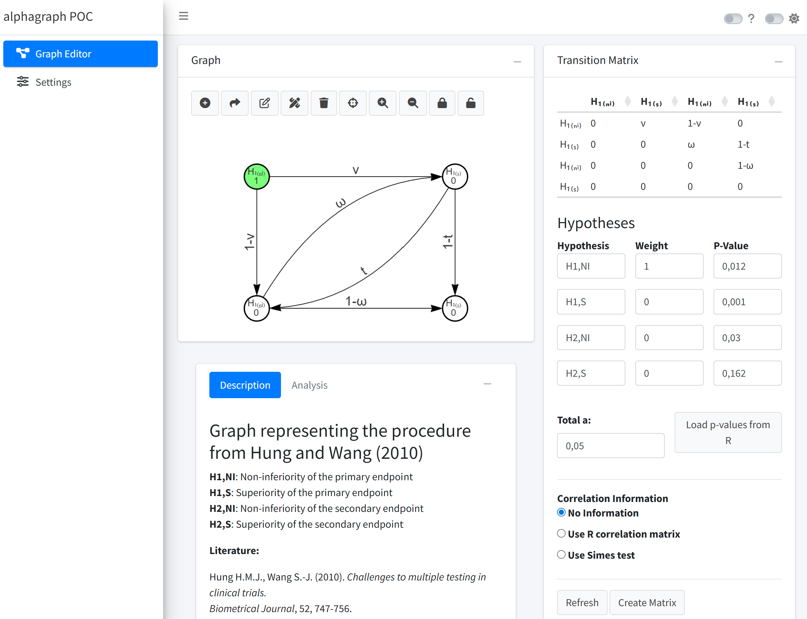
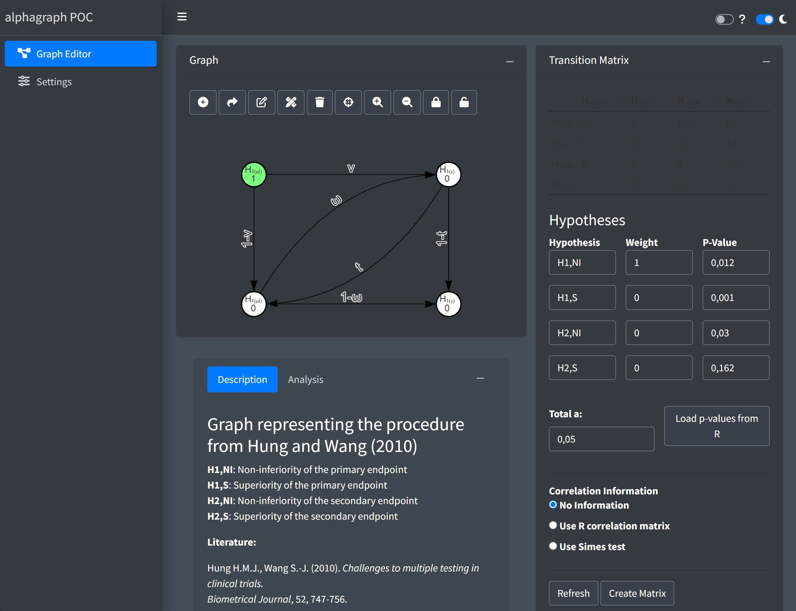

alphagraph – Shiny GUI for Graphical Multiple Comparison Procedures
Friedrich Pahlke, Daniel Sabanés Bové
09 November, 2026 14:13:55
Source:vignettes/design_doc_alphagraph_shiny_app.Rmd
design_doc_alphagraph_shiny_app.RmdOverview
As discussed, the overall work is currently split into two largely independent but closely aligned streams:
-
Methodological development of the
graphicalMCPpackage, including its planned extension to group sequential designs (GSDs), led by Dong and Yao. - Graphical user interface (GUI) development, led by RCONIS, focusing on a modern, maintainable Shiny-based application.
This document focuses exclusively on the GUI development stream, which aims to provide a robust, user-friendly, and future-proof interface for graphical multiple comparison procedures.
The working title of the Shiny application is alphagraph.
Objective
The primary objective is to design and implement a Shiny-based GUI that:
- Is tailored to the
graphicalMCPR package, including its core data structures and workflows. - Can later be extended to support group sequential designs, without requiring a fundamental redesign.
- Does not depend on Java or a local Java installation.
- Adopts and modernizes the core GUI concepts and
workflows of the existing
gMCPapplication. - Can be maintained on a long-term basis, both technically and from a user-experience perspective.
The GUI is intended for biostatisticians working in regulated environments.
Background and Motivation
The existing gMCP GUI provides a powerful and
well-established interface for graphical multiple testing procedures.
However, it is based on a Java implementation that:
- Requires a Java runtime environment.
- Is difficult to integrate into modern R- and Shiny-based workflows.
- Is less flexible with respect to web-based deployment and future extensions.
At the same time, the graphicalMCP R package offers a
modern, extensible, and actively developed implementation of graphical
MCPs. A Shiny-based GUI naturally complements this package and aligns
well with current R ecosystems used in industry and academia.
Scope of the alphagraph GUI
The alphagraph GUI is intended to support, at a
minimum:
- Interactive creation and editing of graphical multiple
comparison procedures, including:
- Adding nodes/hypotheses
- Adding edges
- Change edge arc angle/position
- Zoom in/out
- Double click on a node to change color
- Choose whether weights show as fractions (½) or digits (0.5)
- Modify edges
- Checks edge weights going out from each node (cannot be more than 1)
- Visualization concepts familiar from
gMCP, such as:- Fixed node positioning
- Clear labeling of hypotheses and transitions
- Optional grid-based layouts
- Inspection and editing of the transition matrix corresponding to the graph.
- A clear separation between:
- Graph specification
- Descriptive information
- Analytical results
- Export options for:
- Graph images (e.g., PNG, PDF)
- Transition matrices (e.g., CSV, Excel)
- Analytical results (e.g., HTML reports, CSV)
Export of graphs in TikZ/LaTeX format is conceptually supported; however, we recommend implementing this functionality at the level of an R package rather than within the Shiny GUI itself.
The primary focus of the alphagraph Shiny application is
performance and interactivity in the GUI. Based on our
technology evaluation, performant and highly interactive web-based
visualizations are generally implemented using JavaScript-based
technologies. As a consequence, TikZ/LaTeX export is
technologically decoupled from the interactive rendering layer.
Technology Considerations and External Input
This assessment is also supported by external experience shared during the graphicalMCP kick-off meeting on 13 November 2025. In this meeting, Keaven Anderson (US Merck) reported on ongoing activities and lessons learned from evaluating different technologies for interactive graphical MCP visualizations. Among other approaches,
ggplot2is currently being used; however, it was described as not sufficiently performant and interactive for the intended use cases. As a consequence, a JavaScript-based solution is being pursued, with Davit Robertson currently working on an R wrapper around the JavaScript library G2.js (see G2, g2r) to address these limitations.This independent experience further supports our conclusion that a JavaScript-based rendering layer is the most appropriate technological basis for a highly interactive and performant GUI.
From an architectural perspective, we therefore consider it
preferable to implement TikZ/LaTeX export functionality either directly
in the graphicalMCP package or in a dedicated extension
package (e.g. graphicalMCP.TikZ or
alphagraphTikZ). This ensures that high-quality,
publication-ready exports are available independently of the
GUI, i.e. also in purely R-based workflows. Otherwise,
TikZ/LaTeX export would be limited to a GUI-only feature, which would
reduce its reusability and long-term maintainability.
Advanced features (e.g., group sequential extensions, reporting) are explicitly out of scope for the initial design phase, but are considered in the overall architecture.
Proof-of-Concept (PoC) Approach
Before committing to a specific technical solution, we developed a Proof-of-Concept (PoC) Shiny application.
The goals of the PoC were to:
- Demonstrate that a Shiny-based GUI can closely replicate the
look and feel of the
gMCPGUI. - Evaluate whether interactive graph editing (nodes, edges, labels, positioning) is feasible with available R packages.
- Identify technical limitations early, particularly
with respect to:
- Rendering performance
- Label formatting
- Interactivity
- Long-term maintainability
The PoC is intentionally minimal and focuses on technical feasibility rather than completeness.
Technology Research and Evaluation
As part of the PoC phase, we conducted a structured review of available R packages and JavaScript libraries suitable for interactive graph visualization within Shiny applications.
The evaluation criteria included:
- Compatibility with Shiny and
htmlwidgets - Level of interactivity (drag-and-drop, editing, zooming)
- Visual flexibility (labels, edges, layout control)
- Long-term maintenance prospects
- Dependency footprint (e.g., JavaScript requirements)
The PoC implementation was used to validate the most promising candidate(s) in practice, rather than relying solely on documentation-level comparisons.
Comparison of R packages for graph visualization
The igraph Package
The graphicalMCP package uses the igraph
package for graphical representation of graphical multiple comparison
procedures.
The igraph
package is primarily designed for graph data structures, algorithms, and
static visualization. While it provides extensive functionality for
graph construction and analysis, it does not support interactive graph
editing or bidirectional interaction between a graphical representation
and the underlying data model.
It is possible to render igraph objects using
JavaScript-based technologies, for example via the networkD3
package, which converts igraph graphs into a format
suitable for interactive D3-based visualizations. This approach enables
basic interactivity such as zooming or hovering, and therefore
represents a JavaScript-backed rendering of igraph
graphs.
However, this interaction remains one-directional.
User-driven modifications performed in the browser (e.g., dragging
nodes, adding or removing edges, changing weights or labels) are not
propagated back to the underlying igraph object in a
structured and reproducible way. In particular, the reverse mapping from
an interactively modified graph representation to a validated graph data
structure is not supported.
Consequently, neither igraph alone nor
igraph in combination with networkD3 is
suitable as the primary rendering and interaction layer for an
interactive Shiny-based GUI that requires full graph editing
capabilities. Instead, igraph is best positioned as an
internal data model and computation layer (e.g., for validation,
algorithms, and export), while a dedicated JavaScript-based
visualization library is required for interactive graph editing in the
GUI.
The ggplot2 Package
The Shiny application gMCPLite, with
gmcp as
the deployed version, is based on ggplot2
for graphical representation of graphical multiple comparison
procedures.
ggplot2 provides a powerful and well-established
framework for static data visualization and is widely used within the R
ecosystem. It is particularly well suited for producing
publication-quality figures in a reproducible and declarative manner. As
such, it represents a natural and robust choice for static visualization
of graphical MCPs.
However, ggplot2 is fundamentally designed for
static plots. While it can be embedded in Shiny
applications and supports limited forms of interaction (e.g., via
reactive re-rendering or auxiliary packages), it does not natively
support highly interactive graph editing workflows. In particular,
operations such as dragging nodes, interactively adding or deleting
edges, modifying edge weights, or directly manipulating graphical
elements are not supported in a performant and user-friendly way.
These limitations have also been acknowledged in practice. During the
graphicalMCP kick-off meeting on 13 November
2025, Keaven Anderson (Merck), one of the developers of
gMCPLite, reported that while ggplot2 is currently
used, it has proven to be insufficient in terms of performance and
interactivity for more advanced graphical MCP use cases. As a
consequence, alternative approaches based on JavaScript technologies are
being explored, including the development of an R wrapper around the
JavaScript library G2.
In summary, while ggplot2 is an excellent choice for
static and reproducible visualizations, it is not well suited as the
primary rendering and interaction layer for an interactive Shiny-based
GUI that requires real-time graph editing and rich user interaction. For
such use cases, a dedicated JavaScript-based visualization layer is
required.
Comparison of JavaScript-based graph visualization options
Interactive graph visualization in web applications such as Shiny is
best supported by JavaScript-based libraries, since modern browsers
provide efficient rendering, event handling, and rich user
interactivity. In the context of alphagraph, we evaluated
three major options:
- visNetwork (R htmlwidget backed by vis.js / vis-network)
- networkD3 (R htmlwidget based on D3.js)
- cytoscape.js (JavaScript graph library with R/Shiny bindings)
This section summarizes the evaluation and provides a recommendation.
Evaluation criteria
The following criteria were used:
- Interactivity: Support for node/edge editing, drag & drop, zoom/pan, event callbacks.
- Rendering performance: Suitability for moderate-sized networks typical for graphical MCPs.
- Shiny integration: Ease of use as an R package in Shiny apps, including runtime updates (proxy pattern).
- Customizability: Styling, interaction modes, layout control, label handling, and export options.
- Sustainability: Adoption, maintenance activity, documentation quality, and ecosystem maturity.
Option 1: visNetwork (vis.js / vis-network in R)
Overview:visNetwork is an R htmlwidget that wraps the
JavaScript library vis.js (today commonly consumed via
the vis-network module) to visualize and interact with networks
in the browser.
Strengths:
- Strong built-in interactivity: dragging, zooming, panning, selection, and event handling.
- Supports runtime updates from Shiny using
visNetworkProxy()(add/update/remove nodes and edges). - Good balance between usability and performance for moderate-sized networks.
- Straightforward R API and Shiny-friendly patterns.
Considerations:
- Very large graphs (> 1000 nodes) require tuning and are not the primary target of the library (the graphs for graphical testing procedures will almost always have less than 50 nodes).
- Certain advanced features may require deeper configuration or custom JavaScript hooks.
Option 2: networkD3 (D3.js in R)
Overview:networkD3 provides D3-based network visualizations such as
force-directed graphs. D3.js is an extremely flexible JavaScript
visualization ecosystem.
Strengths:
- Excellent for display of force-directed networks.
- Leverages the broad D3 ecosystem for custom visualization concepts.
Limitations (for alphagraph):
-
networkD3is primarily oriented toward visualization rather than full graph editing workflows. - Bidirectional interaction patterns required for an editor-like GUI (add/delete edges, change weights/labels interactively, etc.) are limited without custom JavaScript development.
- Proxy-style runtime updates and structured mapping of interactions
back to a validated graph model are more constrained than with
visNetwork.
Option 3: cytoscape.js (JavaScript library with R/Shiny bindings)
Overview:cytoscape.js is a general-purpose JavaScript graph library
designed for highly interactive, feature-rich network applications.
Strengths:
- Very strong interactivity and extensibility; rich event model and plugin ecosystem.
- Good performance and many layout options, including for more complex networks.
- Widely used in research/knowledge graph contexts.
Considerations (for alphagraph):
- Shiny integration typically relies on wrappers or custom integration patterns, which increases implementation effort and maintenance complexity.
- Steeper learning curve compared to
visNetworkfor an R/Shiny-first implementation team, also limiting potential community contributions in the future.
Summary comparison
| Criterion | visNetwork (vis.js / vis-network) | networkD3 (D3.js) | cytoscape.js |
|---|---|---|---|
| Native Shiny R package workflow | Yes | Yes | Partial (via wrappers/custom integration) |
| Drag & drop node interaction | Yes | Limited | Yes |
| Interactive graph editing (add/delete/edit) | Good | Limited | Excellent |
| Proxy-style runtime updates from Shiny | Yes | Limited | Possible, but typically more involved |
| Customization for editing workflows | Good | Limited | Extensive |
| Learning curve in Shiny/R context | Low | Low | Medium/High |
| Sustainability considerations | Good ecosystem fit + mature usage | Maintained, narrower focus | Very active JS ecosystem; Shiny layer varies |
Recommendation
After systematic evaluation, visNetwork is the
recommended choice for the interactive rendering layer of the
alphagraph GUI.
Rationale:
- It integrates naturally with Shiny and supports bidirectional interactivity through a well-established proxy pattern.
- It provides editor-relevant interactivity (selection, dragging, runtime updates) without requiring substantial custom JavaScript development.
- It offers a strong balance between performance, usability, and
sustainability for the
alphagraphuse case (interactive editing of graphical MCPs with moderate-sized networks). - If a certain feature would not be available in visNetwork this could be added by us to the package or even the underlying JavaScript code.
Proof-of-Concept Shiny Application (alphagraph)
Based on the technology evaluation described above, we implemented a
Proof-of-Concept (PoC) Shiny application using
visNetwork as the interactive graph
visualization layer.
The PoC application is available online at:
https://rpact-alphagraph-poc.share.connect.posit.cloud/
The primary purpose of this PoC is not to provide a feature-complete application, but to validate the technical feasibility, interactivity, and user experience of a Shiny-based GUI for graphical multiple comparison procedures.
Objectives of the PoC
The PoC was designed to demonstrate that:
- A Shiny application can provide an interactive graph editor for graphical MCPs without relying on Java.
- The look and feel of the existing
gMCPGUI can be closely approximated using modern web technologies. - Core user requirements identified from the
gMCPGUI can be implemented in a performant and maintainable way. - The selected technology stack (
visNetwork+ Shiny) supports bidirectional interaction, i.e. user actions in the GUI can be mapped back to a structured graph representation.
Implemented Functionality (PoC Scope)
The PoC application demonstrates, among others, the following capabilities:
- Interactive visualization of graphical multiple comparison procedures.
- Manual positioning of nodes with fixed layouts (no automatic re-layout).
- Drag-and-drop interaction for nodes.
- Directed edges with labeled transition weights.
- Grid-based layout to support structured graph design.
- A GUI layout inspired by the
gMCPapplication, including:- A central graph editor
- Side panels for auxiliary information (e.g. transition matrices, parameters)
- Toolbar-based interaction patterns
These features already cover a substantial subset of the requirements
identified for the alphagraph GUI.
Visual Comparison to the gMCP GUI
The following screenshots illustrate that the PoC implementation can
closely resemble the graphical representation and interaction model of
the original gMCP GUI.

alphagraph PoC – Overview
alphagraph PoC – Overview (dark
mode)These examples demonstrate that a visual and functional alignment with gMCP is achievable while benefiting from a modern, web-based architecture.
Conclusions from the PoC
The PoC implementation provides strong evidence that:
- A Shiny-based GUI can closely approximate the graphical
representation and interaction model of the existing
gMCPapplication. - The core workflows of graphical MCPs can be implemented without relying on Java.
- A Shiny-based GUI can satisfy the core user requirements of a graphical MCP editor.
- The chosen technology stack enables a high degree of interactivity while remaining compatible with established R workflows.
- A long-term maintainable replacement for the Java-based
gMCPGUI is technically feasible. - The chosen technology stack allows for incremental extension, including future support for group sequential designs.
The PoC therefore serves as a solid foundation for moving forward
with a full-scale implementation of the alphagraph
application.
Additional Practical Considerations
Beyond the technical evaluation and the PoC results, the following practical aspects further support the proposed approach.
Existing availability of visNetwork at Novartis
ThevisNetworkpackage is already installed in the Novartis environment (verified by Tobias on 28 November 2025). This is advantageous from an IT and compliance perspective, as no additional R packages need to be introduced or approved specifically for thealphagraphGUI.-
Modular architecture and deployment flexibility
The planned modular architecture allows for different deployment scenarios:- A standalone
alphagraphGUI application, focused exclusively on graphical MCP design and interaction. - An
alphagraphmodule embedded into RPACT Cloud.
Embedding
alphagraphinto RPACT Cloud offers additional benefits, as the deployment and validation of RPACT Cloud are already well established at Novartis. This can significantly reduce overhead related to infrastructure, validation, and operational processes, while still allowingalphagraphto be developed and maintained as a logically independent component. - A standalone
These considerations further strengthen the feasibility and sustainability of the proposed solution from both a technical and an organizational perspective.
Use of visNetwork for Graph Visualization in graphicalMCP
The visNetwork package is well suited for
interactive, web-based graph visualization, in
particular within Shiny applications and HTML-based reports. As an
htmlwidget backed by JavaScript, it enables rich interactivity such as
dragging nodes, editing edges, and responding to user events, which are
essential for the GUI.
For static visualization, however,
visNetwork follows a fundamentally different rendering
paradigm than traditional R graphics systems such as base graphics or
ggplot2. While visNetwork widgets can be
embedded naturally in HTML outputs (e.g. HTML-based RMarkdown or Quarto
documents), they do not render directly to standard R graphics devices.
As a consequence, reproducible static outputs such as PDF, Word, or
TikZ/LaTeX figures require additional, browser-based export steps and
are not supported in a device-independent manner comparable to
ggplot2.
For these reasons, visNetwork is not considered a
suitable replacement for a general-purpose plotting backend in the
graphicalMCP R package. Instead, it is best positioned as
an optional interactive visualization layer, for
example via dedicated helper functions that generate HTML-based outputs
for exploration or reporting in web contexts.
In contrast, static and publication-ready visualizations (e.g. PDF or
TikZ/LaTeX) should remain implemented at the package level using
device-independent approaches. This separation of concerns allows
graphicalMCP to support robust, reproducible workflows
while alphagraph provides a rich interactive GUI for graph
construction and editing.
Next Steps
The next steps in the design phase are:
- Finalize the technology choice for graph visualization and interaction.
- Refine the overall GUI layout and interaction model.
- Define a clean internal data model aligned with
graphicalMCP. - Collect feedback from stakeholders before starting full-scale implementation.